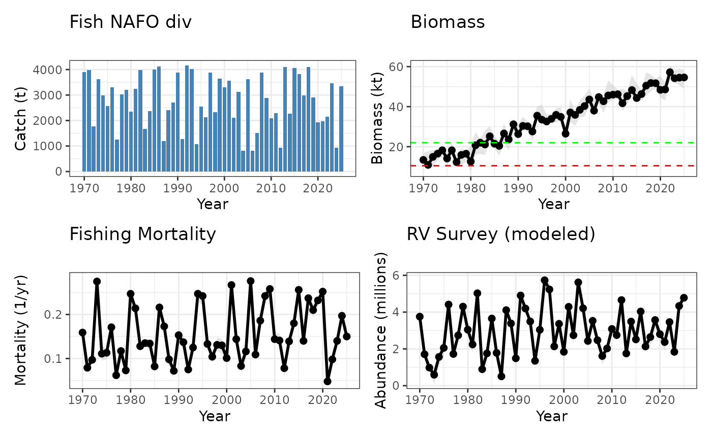

Fisheries Science Advisory Report (FSAR) four panel plot example in marea
Jamie C. Tam
2026-03-02
Source:vignettes/FSAR_4plot_example.Rmd
FSAR_4plot_example.RmdUsing marea to develop FSAR plots
Introduction
Fisheries Science Advisory Reports (FSAR) are provided through the Canadian Science Advisory Secretariat and help decision makers understand information about a particular fish stock through stock assessments.
Stock assessments are the scientific process of analyzing available data to evaluate the abundance, productivity, and options for harvest levels of fish stocks in the past, present, and future.
Example of FSAR dataset
Here we create some example FSAR data:
library(tidyverse)
library(marea)
set.seed(42)
years <- 1970:2025
# Catch: Range ~ 800 to 4200
catch_value <- round(runif(length(years), 800, 4200), 1)
# Biomass: Values rising slowly over years, with uncertainty
biomass_value <- round(seq(12, 55, length.out = length(years)) + rnorm(length(years), 0, 3), 1)
biomass_lower <- round(biomass_value - runif(length(years), 1.2, 6), 1)
biomass_upper <- round(biomass_value + runif(length(years), 1.3, 8), 1)
# Fishing: Rates around 0.06–0.27, with some noise
fishing_value <- round(runif(length(years), 0.06, 0.27) + rnorm(length(years), 0, 0.01), 3)
fishing_lower <- round(fishing_value - runif(length(years), 0.005, 0.02), 3)
fishing_upper <- round(fishing_value + runif(length(years), 0.005, 0.02), 3)
# Recruitment: Generally <1 to ~5, with years of high recruitment and uncertainty
recruitment_value <- round(runif(length(years), 0.8, 5.3) + rnorm(length(years), 0, 0.5), 3)
recruitment_lower <- round(recruitment_value - runif(length(years), 0.08, 0.5), 3)
recruitment_upper <- round(recruitment_value + runif(length(years), 0.08, 0.5), 3)
fsar_fourplot_exdata <- data.frame(
panel.category = rep(c("Catch", "Biomass", "Fishing", "Recruitment"), each = length(years)),
year = rep(years, 4),
ts.name = c(
rep("CanadaTotal", length(years)),
rep("Survey", length(years)),
rep("Ut", length(years)),
rep("RVpred", length(years))
),
value = c(catch_value, biomass_value, fishing_value, recruitment_value),
lower = c(
rep(NA, length(years)),
biomass_lower,
fishing_lower,
recruitment_lower
),
upper = c(
rep(NA, length(years)),
biomass_upper,
fishing_upper,
recruitment_upper
)
)Create ea_data object
Using ea_data allows for storage of rich metadata
alongside the time series dataset. Required metadata include: x
(data), value_col, data_type, location_descriptor, region, units, and
source citation. However, you can add additional metadata as
desired.
fsar_example <- as_ea_data(
x = fsar_fourplot_exdata,
value_col = "value",
data_type = "stock",
location_descriptor = "NAFO divisions",
region = "Maritimes",
units = "variable",
source_citation = "DFO FSAR 2025 citation",
# additional metadata
assessment_lead = "Fishy McFishface",
notes = "any caveats in this dataset like missing years or changes to assessment models"
)Make individual plots
Individual plots can easily be constructed using marea
plotting functions with varying style arguments. You can use
@ operator to access the ea_data data slot and
filter data using $ operator. This can be easily embedded
in the plot function. Since the plots are ggplot2 objects,
extra layers can be added to customize the plots.
# Fishing mortality
pF <- plot(fsar_example[
fsar_example@data$panel.category == "Fishing" & fsar_example@data$ts.name == "Ut"
], style = "ribbon") +
labs(title = "Fishing Mortality", y = "Mortality (1/yr)", subtitle = "")
# Biomass with additional Reference Points
pbiomass <- plot(fsar_example[
fsar_example@data$panel.category == "Biomass" & fsar_example@data$ts.name == "Survey"
], style = "ribbon") +
labs(title = "Biomass", y = "Biomass (kt)", subtitle = "") +
geom_hline(yintercept = 10.5, color = "red", linetype = "dashed") +
geom_hline(yintercept = 22, color = "green", linetype = "dashed")
# Catches
pcatch <- plot(fsar_example[
fsar_example@data$panel.category == "Catch" & fsar_example@data$ts.name == "CanadaTotal"
], style = "histogram") +
labs(title = "Fish NAFO div", y = "Catch (t)", subtitle = "")
# Recruitment
pabun <- plot(fsar_example[
fsar_example@data$panel.category == "Recruitment" & fsar_example@data$ts.name == "RVpred"
], style = "ribbon") +
labs(title = "RV Survey (modeled)", y = "Abundance (millions)", subtitle = "")Easily combine plots
It is easy to make a four plot commonly used in FSARs using
patchwork:

Citing marea
Please cite the package in your work. For citation text:
## To cite marea in publications use:
##
## Jamie C. Tam, Benoit Casault, Stephanie Clay et al. (). marea:
## Maritime Ecosystem Approach R Package. R package version 1.0.0.9000.
## https://doi.org/10.5281/zenodo.15706086
##
## A BibTeX entry for LaTeX users is
##
## @Manual{,
## title = {marea: Maritime Ecosystem Approach R Package},
## author = {Jamie C. Tam and Benoit Casault and Stephanie Clay and Adam Cook and Remi Daigle and Andrew M. Edwards and Jaimie Harbin and Brad Hubley and Keith David and Mike McMahon and Emily A. O'Grady},
## note = {R package version 1.0.0.9000},
## url = {https://github.com/MarEcosystemApproaches/marea},
## doi = {10.5281/zenodo.15706086},
## }
##
## We appreciate citations as they help us secure funding for continued
## development.This vignette was generated using the marea source
code (2025-10-09).